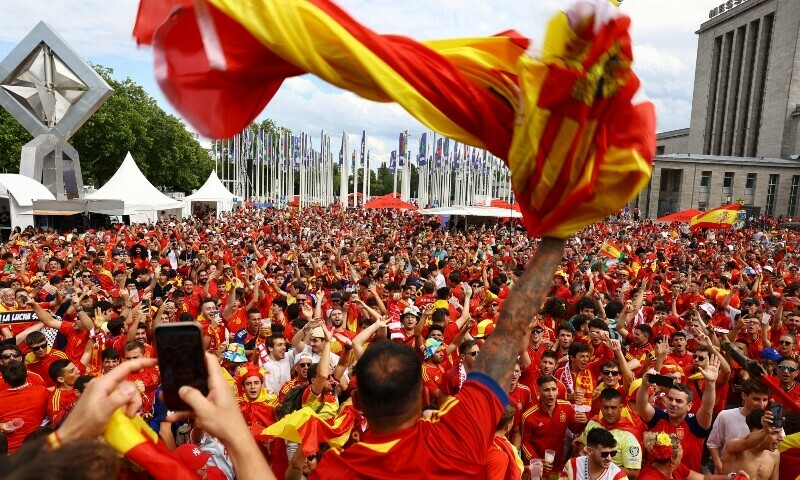

Husking Rovers FC
Victory is The Part of The Effort
The supporters of Husking Rovers are the lifeblood of the club. Known as "The Lions," they bring unmatched energy, color, and devotion to every match.
On matchdays, streets around Husking Stadium fill with chants, flags, and processions. Fans are known for creating a sea of red and blue, waving massive banners and singing anthems that echo through the city.
The loyalty of these fans goes beyond the stadium. They organize community events, charity drives, and youth programs, embodying the spirit of Husking Rovers as a force for good in society.